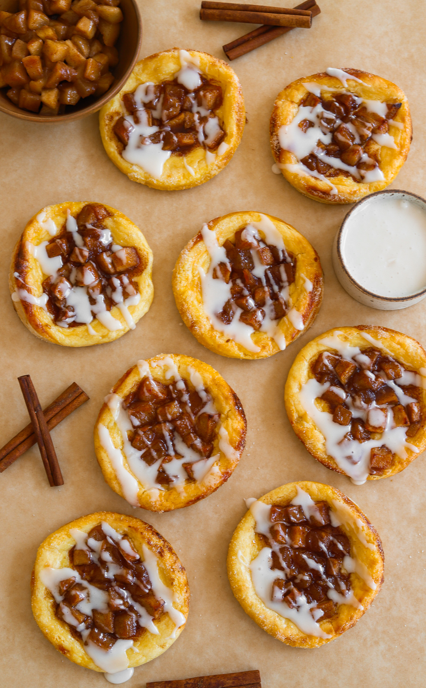
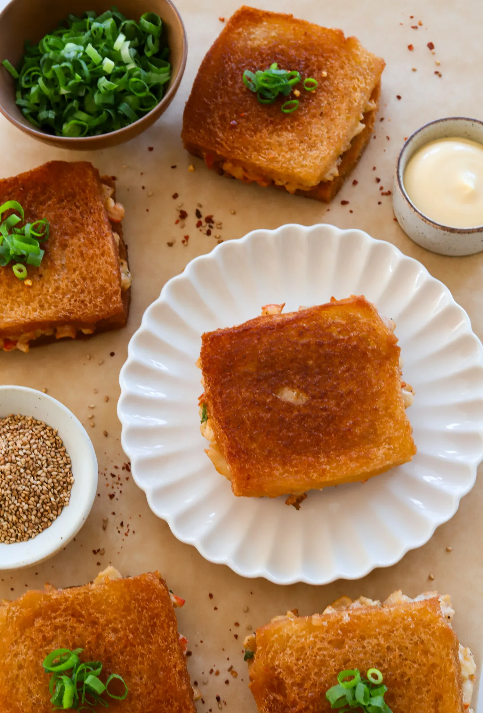

Appetizer Side Dish
RAISING CANE’S TEXAS TOAST
Prep Time: 2 hours Cook Time: 25 minutes
Total Time: 3 hours
Yields: 8 to 10 rolls
These homemade Raising Cane’s-style rolls are soft, fluffy, and
layered with buttery goodness. Each roll is topped with a sprinkle
of sesame seeds, brushed with garlic butter, and toasted until
golden on both sides for that irresistible crunch. Whether you’re
enjoying them on their own or with a favorite dip, these rolls bring
a comforting, fresh-baked warmth to any meal!
Jump to Recipe
Ingredients
Dough
- 4 cups all-pourpose flour
- 1 1/4 cups whole milk, warmed to about 100F
- 2 teaspoons active dry yeast
- 1/4 cup granulated sugar
- 2 teaspoons salt
- 2 large eggs, at room temperature
- 1 stick (1/2 cup) unsalted butter, softned
EGG WASH AND TOPPING
Garlic Butter
- 1/4 cup melted salted butter
- 1/2 teaspoon garlic powder
Instructions
- Activate the Yeast: In a large mixing bowl,
combine the warmmilk and sugar, then sprinkle the
yeast over the top. Let it sit for 5-10 minutes
until it’s foamy.
-
Prepare the Dough: To the same mixing bowl, add
the flour, salt, eggs, and softened butter. Mix
until the dough starts to come together.
- Knead the Dough: Knead the dough on a floured
surface for about 8-10 minutes until it’s smooth and
elastic. Alternatively, use a stand mixer with a dough
hook for 5-7 minutes on medium speed.
- First Rise: Transfer the dough to a greased bowl
cover it with a damp cloth or plastic wrap, and let it
rise in a warm spot for 1-2 hours, or until doubled in
size.
- Shape the Dough for Layers: Punch down the dough
to release the air. Divide the dough into equal
portions, about 10 pieces. Take each portion of dough
and flatten it out into a rectangle. Starting from one
end, roll the dough tightly into a long log shape to
create layers within each roll.
- Place in Baking Tray: Arrange the shaped rolls
side by side in a greased baking tray, about 15 x 6
inches, so they touch slightly. This will help them bake
into a pull-apart style loaf
- Second Rise: Cover the rolls loosely and let them
rise again for 30-45 minutes, or until puffy.
- Apply the Egg Wash: Preheat your oven to 375°F
(190°C). Brush the tops of the rolls with the egg wash
and sprinkle with sesame seeds.
- Bake: Bake the rolls for 15-20 minutes, or until
golden brown on top. Remove from the oven and let
them cool slightly.
- Butter Topping and Toasting: In a small bowl,
combine melted salted butter with garlic powder.
Separate the rolls, brush them with the garlic butter
mixture, and toast each roll on both sides in a skillet
over medium heat until golden to enjoy.

Dessert
APPLE PIE DANISHES
Prep Time: 2 hours Cook Time:
25 minutes Total Time: 3 hours
Yields: 8 to 10 rolls
These apple cream cheese danishes taste like they came
straight from a bakery, but they’re so easy to make at
home! Flaky, buttery puff pastry with a creamy layer of
sweetened cream cheese and tender cinnamon-spiced apples
– every bite is a dream. Perfect for breakfast, dessert,
or a cozy afternoon treat!
Jump to Recipe
INGREDIENTS
APPLE PIE FILLING
- 2 large Granny Smith apples, peeled and cubed
- 3 tablespoons unsalted butter
- 1/3 cup light brown sugar
- 1 1/4 teaspoon cinnamon
- pinch of salt
- 1 teaspoon vanilla extract
- 1/2 tablespoon lemon juice
- 2 teaspoons cornstarch
- 1 tablespoon water
CHEESE FILLING:
- 8 ounces cream cheese, softened
- 1/4 cup granulated white sugar
- 1 egg yolk
- 1 teaspoon vanilla extract
EGG WASH
- 1 large egg
- 1 tablespoom whole milk
ICING GLAZE
- 1 cup powdered sugar
- 2 tablespoons whole milk or heavy cream
- 1/2 teaspoon vanilla extract
OTHER
- 2 puff pastry sheets
- granulated white sugar, for sprinkling
INSTRUCTIONS
PREPARE APPLE FILLING:
-
In a medium pan, melt the butter over medium heat.
-
Add the cubed apples,brown sugar, cinnamon, and a
pinch of salt. Cook until the apples soften, about
5-7 minutes.
-
Stir in the vanilla extract, lemon juice,
cornstarch, and water. Continue cooking until
the mixture thickens, about 2 minutes.
-
Remove from heat and let the apple mixture cool.
ASSEMBLE DANISHES:
-
Roll out the puff pastry sheets on a floured surface
and cut each sheet into circles using a large cookie
cutter or a glass.
-
Using a smaller cutter, lightly score a smaller
circle about 3/4 of the way through the dough in the
center of each larger circle. his will help keep the
center from rising too much during baking.
-
Spoon about 1 tablespoon of the cream cheese filling
into the center of each scored circle.
-
Top the cream cheese mixture with a spoonful of the
cooled apple filling.
-
Whisk the egg and milk together in a small bowl.
-
Brush the outer edges of the pastry with the egg
wash.
-
Sprinkle a little granulated sugar over the
edges.
BAKE THE DANISHES:
- Preheat your oven to 400°F (200°C).
-
Bake the danishes for 15-20 minutes or until the
puff pastry is golden and flaky.
THE ICING:
-
In a small bowl, whisk together the powdered sugar,
vanilla extract, and milk or cream until smooth.
Adjust the consistency with more milk if necessary.
-
Once the danishes are out of the oven and fully
cooled,drizzle the icing over them and enjoy!

Appetizer
Crab Ragoon Toast
PREP TIME: 30 MINUTES COOK TIME:
15 MINUTES TOTAL TIME: 45 MINUTES
YIELDS: 6
If you love crab rangoon and crispy bread, you’re in for
a treat with these Crab Rangoon Sandwiches! This
delightful fusion takes inspiration from Chinese shrimp
toast, combining the creamy, savory filling you adore
with the satisfying crunch of toasted bread. It’s the
perfect appetizer or snack that will impress your
friends and family!
Jump to Recipe
INGREDIENTS
Crab Filling
- 1 pound crab imitation meat
- 1/2 cup kewpie mayo
- 1 tablespoon low-sodium soy sauce
- 1 egg white
- 1/3 cup cream cheese, room temp
- 1/2 teaspoon garlic powder
- 1/2 teaspoon salt
- 1/4 teaspoon black pepper
- 1/4 cup green onions, chopped
- 3 tablespoons cornstarch
OTHER
- 12 slices stale white bread
- vegetable oil, for frying
- sweet chili sauce, for dipping
INSTRUCTIONS
CRAB FILLING
-
In a large bowl, add the imitation crab meat, Kewpie
mayo, soy sauce, egg white, and cream cheese. Mix
until everything is well combined.
-
Add the garlic powder, salt, black pepper, and
chopped green onions. Stir to incorporate.
-
Sprinkle in the cornstarch and gently fold it
into the mixture to help bind the filling
together. Set the crab filling aside
PREPARE THE BREAD:
-
Take the stale white bread slices and trim off the
crusts if preferred. You will need pairs of slices
for each sandwich.
-
You can leave the bread as whole slices or cut each
slice in half for smaller sandwiches, depending on
your preference.
ASSEMBLE:
-
Spread a generous amount of crab filling on one
slice of bread in each pair. Top with a second slice
of bread to create a sandwich.
-
Press down lightly on the sandwich to ensure the
filling adheres well.
FRY THE SANDWICHES:
-
Heat vegetable oil in a skillet or deep pan over
medium heat, ensuring the oil is deep enough for
shallow frying (about 1/4 to 1/2 inch).
-
Once the oil is hot, carefully place the sandwiches
in the pan. Fry for 2-3 minutes until the bottom is
golden and crispy.
-
Flip the sandwiches and fry the other side for
another 2-3 minutes until it’s golden and crispy.
DRAIN AND SERVE:
-
Remove the sandwiches from the oil and place them on
a paper towel-lined plate to drain any excess oil.
-
Serve immediately with your favorite dipping sauces,
such as sweet chili or soy sauce.